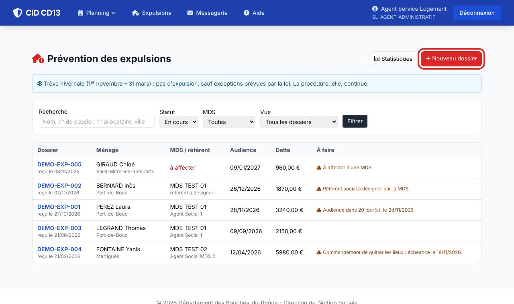
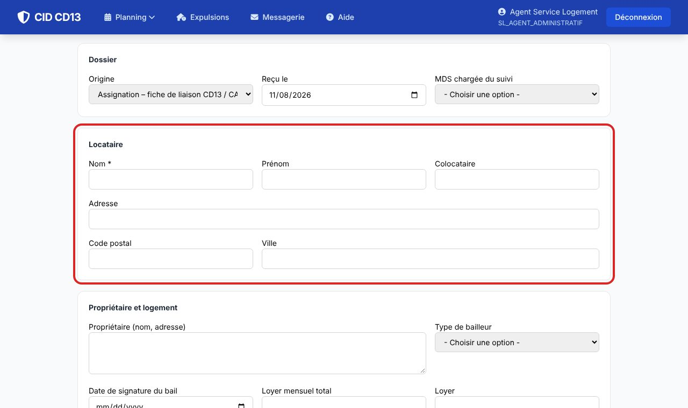
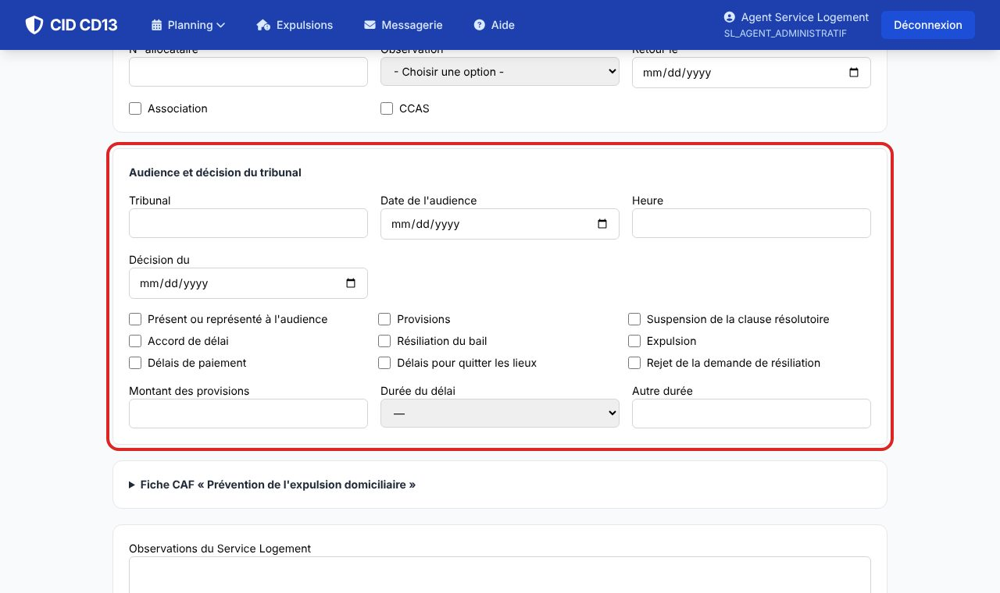
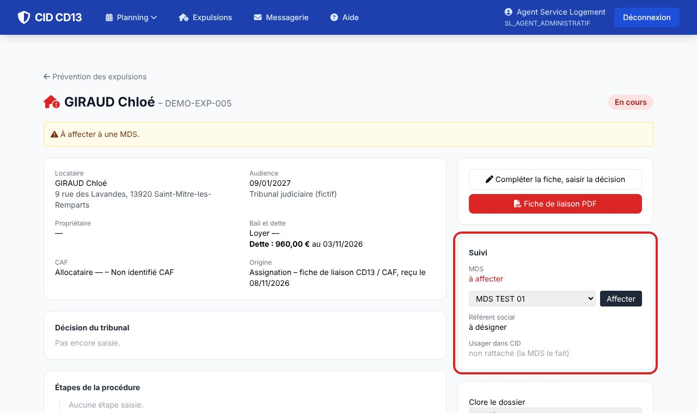
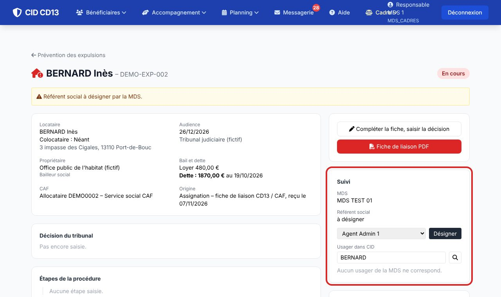
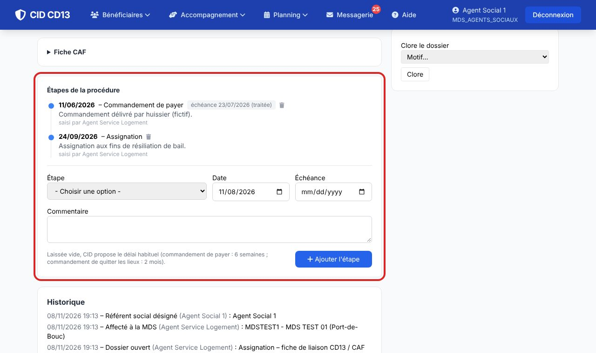
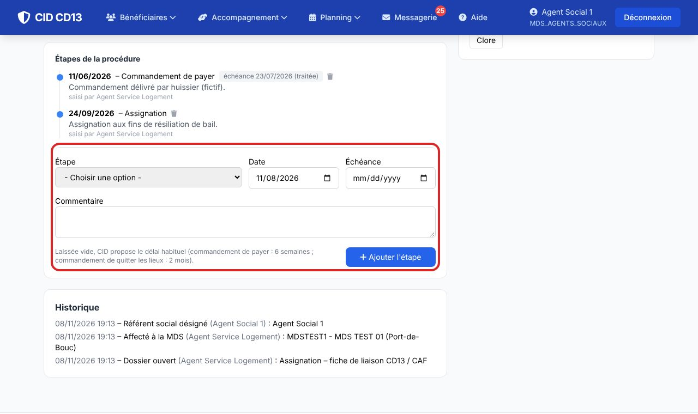
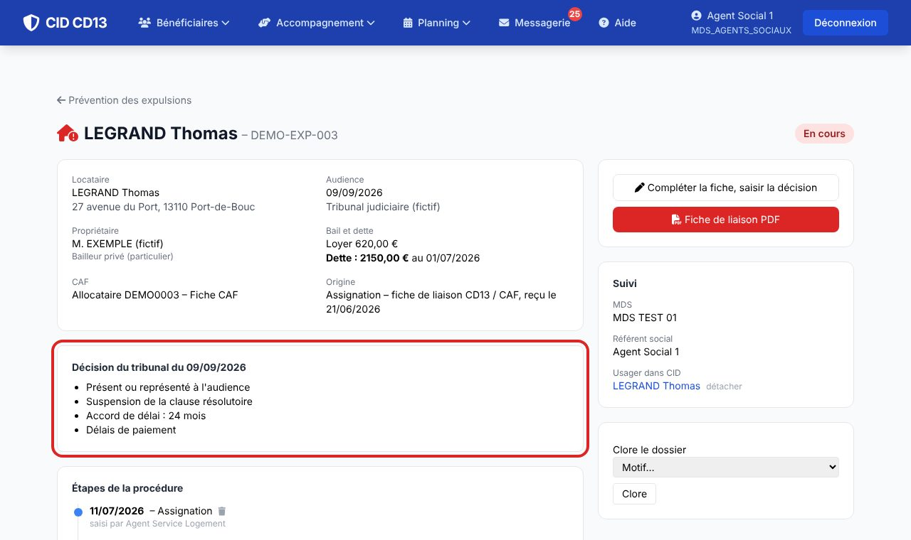
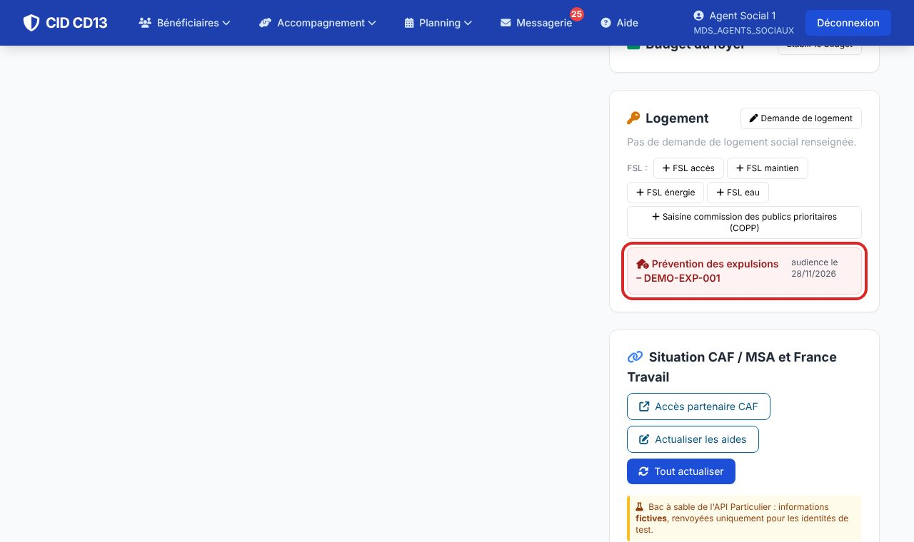
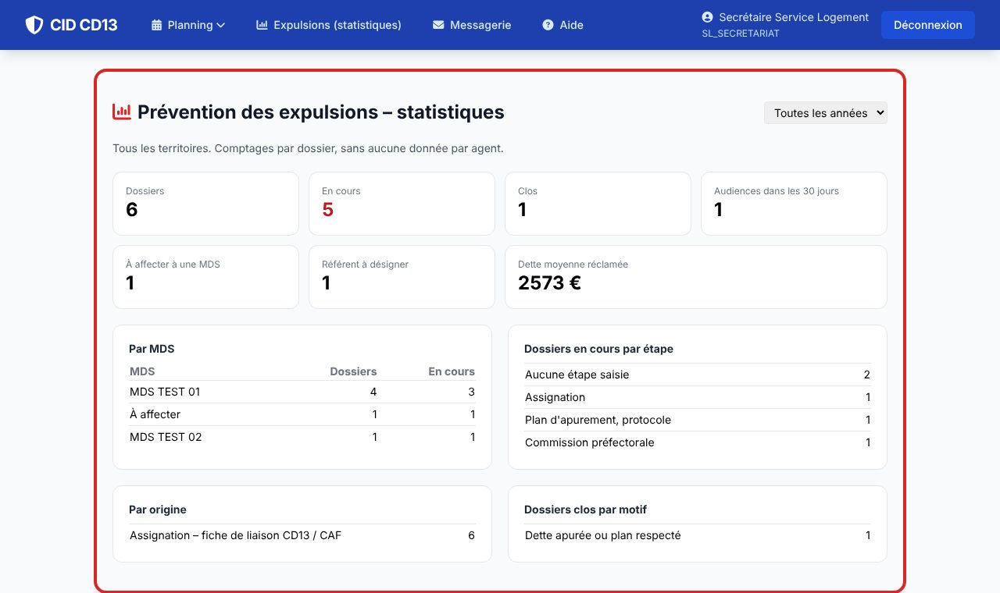

1La liste des dossiers

- Le Service Logement voit les dossiers de tous les territoires ; une MDS ne voit que les siens.
- La colonne À faire signale ce qui attend : dossier à affecter, référent à désigner, audience proche, décision à saisir, échéance d'une étape.
- Filtrez par MDS, par statut, ou affichez Mes dossiers ou les audiences à venir.
2Saisir la fiche de liaison


- Nouveau dossier : reprenez les rubriques de la fiche de liaison (locataire, colocataire, propriétaire, bail, loyer, dette réclamée, observations CAF, audience).
- La fiche CAF « Prévention de l'expulsion domiciliaire » (identification, situation familiale et professionnelle, ressources, prestations, logement, FSL) se déplie en bas du formulaire.
- Choisissez la MDS : à l'enregistrement, son responsable reçoit un message dans CID. Plus besoin d'envoyer le PDF par mail.
Seuls le nom et l'origine sont obligatoires : le dossier se complète au fil des informations reçues.
3Affecter ou réaffecter

- Bloc Suivi : choisissez la MDS puis Affecter (ou Réaffecter si le ménage relève d'une autre MDS : le référent est alors à redésigner).
4Désigner le référent, rattacher l'usager

- Le cadre de la MDS choisit le référent social ; un travailleur social peut aussi cliquer sur Je suis le référent.
- Usager dans CID : cherchez le ménage parmi les usagers de la MDS et cliquez sur Rattacher. Le dossier apparaît alors dans l'encart « Logement » de sa fiche.
Le Service Logement ne voit pas les dossiers des usagers : c'est la MDS qui rattache.
5Suivre la procédure


- Ajoutez chaque étape avec sa date : commandement de payer, assignation, diagnostic social et financier, audience, jugement, plan d'apurement, commandement de quitter les lieux, demande de concours de la force publique, commission préfectorale…
- Laissée vide, l'échéance est proposée (commandement de payer : 6 semaines ; commandement de quitter les lieux : 2 mois). Elle s'affiche dans « À faire » quinze jours avant ; cliquez sur échéance traitée une fois fait.
- Pendant la trêve hivernale (1er novembre – 31 mars), un bandeau le rappelle sur les dossiers concernés.
6Saisir la décision du tribunal

- Compléter la fiche, saisir la décision : cochez les cases de la fiche de liaison (présence, provisions, suspension de la clause résolutoire, accord de délai 12 ou 24 mois, résiliation, expulsion, délais, rejet).
- Quand la MDS saisit la décision, le Service Logement est prévenu. La Fiche de liaison PDF reprend tout, avec la fiche CAF en page 2.
7Sur la fiche de l'usager

- Un dossier rattaché apparaît en rouge dans l'encart Logement, avec la date de l'audience : FSL maintien et commission des publics prioritaires sont à portée de clic.
8Les statistiques

- Dossiers en cours et clos, à affecter, audiences dans les 30 jours, dette moyenne, répartition par MDS, par étape, par origine, par motif de clôture.
- Le secrétariat du Service Logement n'a accès qu'à cette page ; une MDS voit les chiffres de ses dossiers. Aucun chiffre n'est calculé par agent.
Bon à savoir
- Trois profils pour le Service Logement : cadres et adjoint (tout, y compris supprimer un dossier saisi par erreur), agents administratifs (saisie et suivi des dossiers), secrétariat (statistiques). Ils s'attribuent dans Comptes & droits.
- Clore un dossier demande un motif (dette apurée ou plan respecté, désistement, relogement, départ, expulsion…) ; il peut être rouvert.
- Les coordonnées du Service Logement imprimées sur la fiche PDF se règlent en administration (paramètre SERVICE_LOGEMENT_COORDONNEES).
- À venir : convocations, diagnostic social et financier prérempli, envoi au tribunal et à la préfecture, CAPEX locale.
Et ensuite ?
Cliquez sur une image pour l'agrandir. Le cadre rouge montre où cliquer ou quoi remplir. Toutes les données affichées sont fictives.